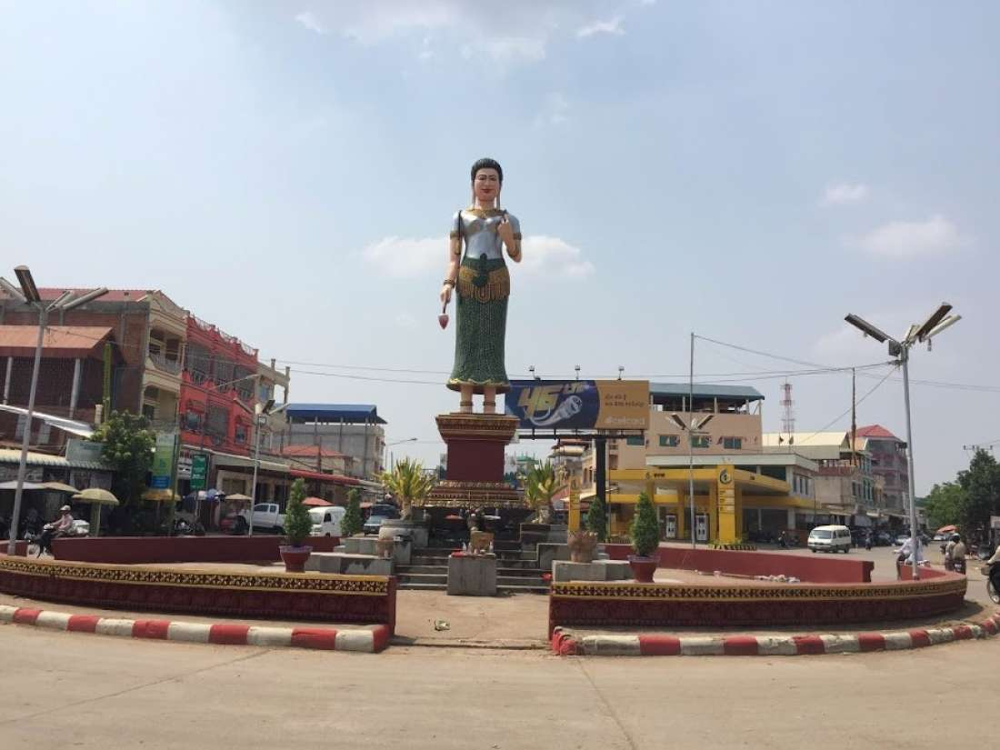

 ខេត្តបន្ទាយមានជ័យ គឺជាខេត្តមួយនៃព្រះរាជាណាចក្រកម្ពុជាដែលស្ថិតនៅចុងពាយ័ព្យនៃប្រទេសដែលមានសេដ្ឋកិច្ចយ៉ាងសំខាន់មួយរបស់ប្រទេសជាតិ។ ខេត្តនេះមានព្រំខេត្តជាប់ខេត្តឧត្តរមានជ័យ នៅខាងកើតជាប់ខេត្តសៀមរាប នៅខាងត្បូងជាប់ ខេត្តបាត់ដំបង និងមានព្រំដែនរួមអន្តរជាតិជាមួយប្រទេសថៃនៅខាងលិច។ ទីរួមខេត្តនិងទីក្រុងធំបង្អស់គឺក្រុងសិរីសោភ័ណ និងក្រុងប៉ោយប៉ែត។ ខេត្តបន្ទាយមានជ័យគឺជាខេត្តធំបង្អស់ទី១៣ នៃព្រះរាជាណាចក្រកម្ពុជា។ ដោយមានប្រជាជន ៦៧៨០៣៣ នាក់ វាជាប់លេខជាខេត្តធំទី ១០ ប្រចាំប្រទេស។ ខេត្តនេះមានក្រុងចំនួនពីគឺក្រុងសិរីសោភណ្ឌ និងក្រុងប៉ោយប៉ែតនៅប៉ែកខាងលិចនៃខេត្តគឺជាព្រំដែនអន្តរជាតិឆ្លងចូលទៅប្រទេសថៃ។ បន្ទាយមានជ័យគឺជាខេត្តមួយក្នុងចំណោមខេត្តទាំងប្រាំបួនដែលជាប៉ែកភាគនៃដែនជំរកជីវមណ្ឌលទន្លេសាប។ ខេត្តបន្ទាយមានជ័យមានប្រជាជនសរុប ៨១៦ ៣៨២ ឬ ៥,២៤២%នៃប្រជាជនកម្ពុជាសរុប(ទិន្នន័យរដ្ឋាភិបាលកម្ពុជាឆ្នាំ២០០៧)។ ក្នុងនោះមានបុរស ៤០២ ២០១ (ត្រូវជា៤៩,១១%) និងស្ត្រី ៤១៤ ១៨១ (ត្រូវជា៥០,៨៩%)។ អត្រាកំនើនប្រជាជនស្មើនឹង ៥,៩៣%។ ប្រជាជនខេត្តបន្ទាយមានជ័យ៩៣%ជាកសិករ ៥%ជាពាណិជ្ជករ ១,១៧%ជាអ្នកនេសាទ និង ០.៨៣%ទៀតជាមន្ត្រីរាជការ។ នៅឆ្នាំ ១៩៨៨ ខេត្តបន្ទាយមានជ័យត្រូវបានបំបែកចេញពីខេត្តបាត់ដំបង ដោយមានស្រុកដំបូង៥គឺ ស្រុកមង្គលបុរី ស្រុកថ្មពួក ស្រុកសិរីសោភ័ណ ស្រុកព្រះនេត្រព្រះ និងស្រុកភ្នំស្រុក។ ខេត្តបន្ទាយមានជ័យ គឺជាខេត្តមួយនៃព្រះរាជាណាចក្រកម្ពុជាដែលស្ថិតនៅចុងពាយ័ព្យនៃប្រទេសដែលមានសេដ្ឋកិច្ចយ៉ាងសំខាន់មួយរបស់ប្រទេសជាតិ។ ខេត្តនេះមានព្រំខេត្តជាប់ខេត្តឧត្តរមានជ័យ នៅខាងកើតជាប់ខេត្តសៀមរាប នៅខាងត្បូងជាប់ ខេត្តបាត់ដំបង និងមានព្រំដែនរួមអន្តរជាតិជាមួយប្រទេសថៃនៅខាងលិច។ ទីរួមខេត្តនិងទីក្រុងធំបង្អស់គឺក្រុងសិរីសោភ័ណ និងក្រុងប៉ោយប៉ែត។ ខេត្តបន្ទាយមានជ័យគឺជាខេត្តធំបង្អស់ទី១៣ នៃព្រះរាជាណាចក្រកម្ពុជា។ ដោយមានប្រជាជន ៦៧៨០៣៣ នាក់ វាជាប់លេខជាខេត្តធំទី ១០ ប្រចាំប្រទេស។ ខេត្តនេះមានក្រុងចំនួនពីគឺក្រុងសិរីសោភណ្ឌ និងក្រុងប៉ោយប៉ែតនៅប៉ែកខាងលិចនៃខេត្តគឺជាព្រំដែនអន្តរជាតិឆ្លងចូលទៅប្រទេសថៃ។ បន្ទាយមានជ័យគឺជាខេត្តមួយក្នុងចំណោមខេត្តទាំងប្រាំបួនដែលជាប៉ែកភាគនៃដែនជំរកជីវមណ្ឌលទន្លេសាប។ ខេត្តបន្ទាយមានជ័យមានប្រជាជនសរុប ៨១៦ ៣៨២ ឬ ៥,២៤២%នៃប្រជាជនកម្ពុជាសរុប(ទិន្នន័យរដ្ឋាភិបាលកម្ពុជាឆ្នាំ២០០៧)។ ក្នុងនោះមានបុរស ៤០២ ២០១ (ត្រូវជា៤៩,១១%) និងស្ត្រី ៤១៤ ១៨១ (ត្រូវជា៥០,៨៩%)។ អត្រាកំនើនប្រជាជនស្មើនឹង ៥,៩៣%។ ប្រជាជនខេត្តបន្ទាយមានជ័យ៩៣%ជាកសិករ ៥%ជាពាណិជ្ជករ ១,១៧%ជាអ្នកនេសាទ និង ០.៨៣%ទៀតជាមន្ត្រីរាជការ។ នៅឆ្នាំ ១៩៨៨ ខេត្តបន្ទាយមានជ័យត្រូវបានបំបែកចេញពីខេត្តបាត់ដំបង ដោយមានស្រុកដំបូង៥គឺ ស្រុកមង្គលបុរី ស្រុកថ្មពួក ស្រុកសិរីសោភ័ណ ស្រុកព្រះនេត្រព្រះ និងស្រុកភ្នំស្រុក។